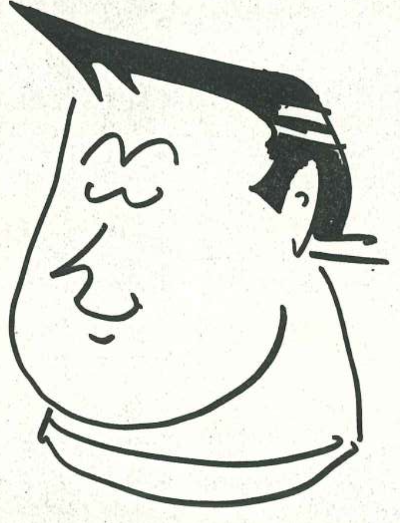
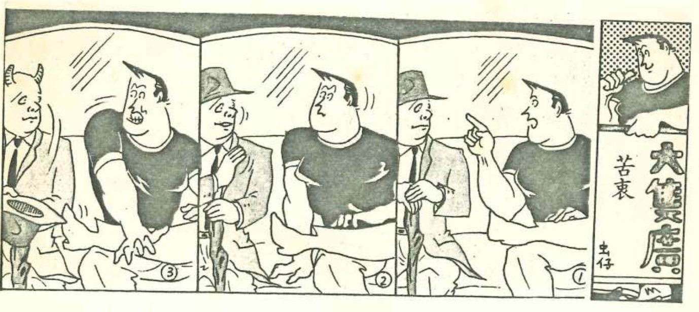
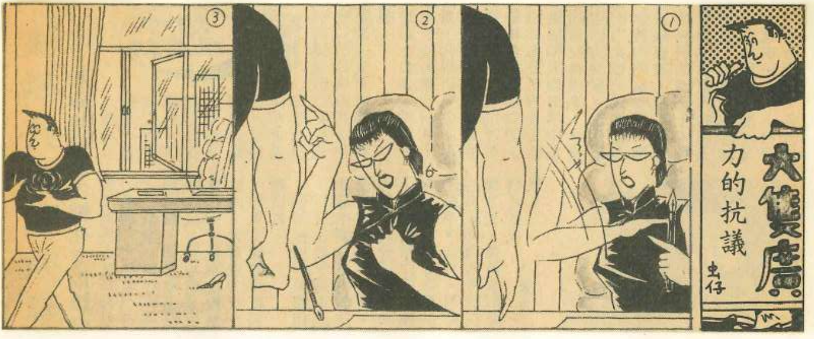

01 · Ink
Bamboo
Expressive brushwork, restraint and movement drawn from the natural world.
Hong Kong Artist
Ink · Watercolour · Illustration · Comics

Vintage Newspaper Comics · 報章連載漫畫
During the 1980s and 1990s in Hong Kong, the artist published daily 4-panel comic strips under the pen name 虫仔 across local newspapers. The series captures the humor, resilience, and grassroots pulse of Hong Kong's golden era.



Selected works
Expressive brushwork, restraint and movement drawn from the natural world.

Warm colour, familiar objects and the small pleasures of everyday life.

Playful forms and lively personalities with strong potential for editorial and product applications.
Explore


About the artist
作者年輕時為了維持生計，曾從事各式各樣的工作，足跡遍及不同行業，包括船塢工人、建築地盤工人，以及製衣、塑膠和玩具工廠的工人；其後亦曾擔任路邊剪草工、小販、雜誌社促銷員、文件送遞員、電報打字員（負責處理貴重金屬報價）、辦公室文員等。
這些豐富而多元的工作經歷，讓作者有機會接觸社會不同階層，親身見證形形色色的人和事，深刻體會人情冷暖與世態炎涼。多年來的生活閱歷，不僅拓闊了作者的視野，也成為其創作 Important 養分，並自然地反映在作品的題材、人物塑造及情節之中。
從某種意義上說，作者的創作不只是個人生命經驗的記錄，也是香港上世紀八、九十年代社會面貌的縮影。那些來自基層生活的觀察與感受，見證了香港社會的變遷與時代脈搏，因此作者亦深以自己能夠成為那段歷史的見證人而感到自豪。
In his youth, the author worked a wide variety of jobs to make a living, leaving his mark across diverse industries. His roles spanned from dockworker, construction worker, and laborer in garment, plastics, and toy factories, to roadside grass cutter, street vendor, magazine promoter, courier, telegraph typist (handling precious metal quotes), and office clerk.
These rich and varied work experiences granted him firsthand exposure to different strata of society, allowing him to witness all walks of life and deeply experience both the warmth and harshness of human nature. Over the years, this breadth of life experience expanded his horizons and provided essential nourishment for his writing, naturally shaping his themes, character development, and plotlines.
In a sense, the author's work is not only a record of his personal life journey, but also a microcosm of Hong Kong's social landscape in the 1980s and 1990s. Grounded in the observations and sentiments of grassroots life, his stories bear witness to Hong Kong’s social transformations and the pulse of the era—a history he takes immense pride in having observed firsthand.
Collaboration
Available for licensing, fashion, packaging, stationery, editorial work, exhibitions and selected commissions.


Contact